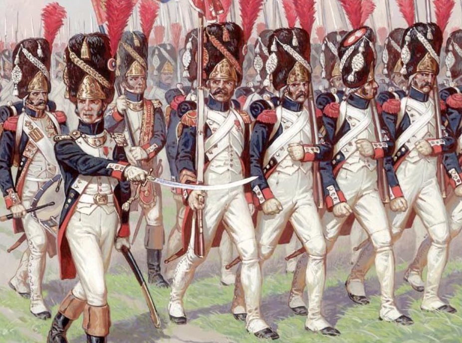
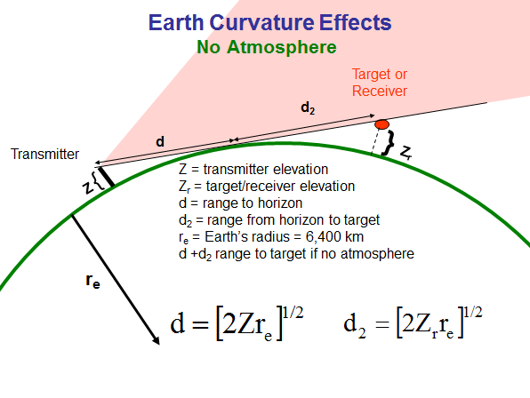
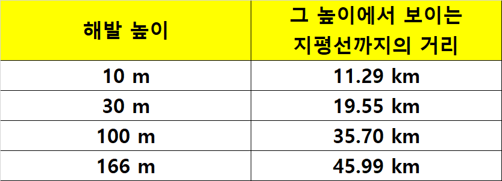
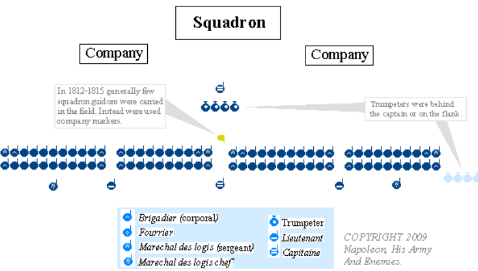
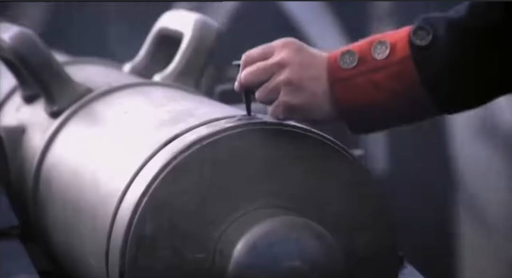
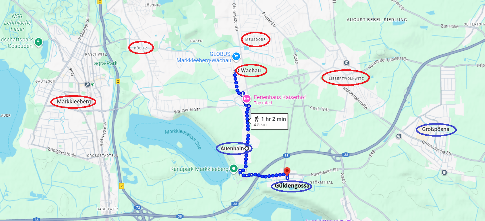
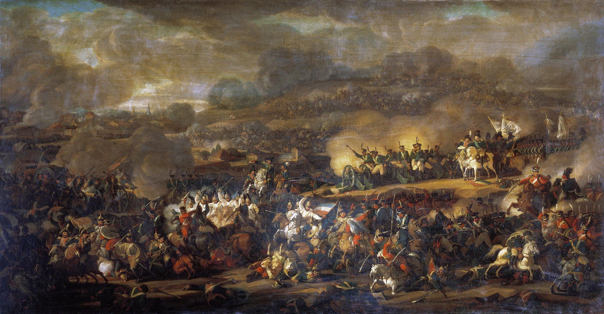
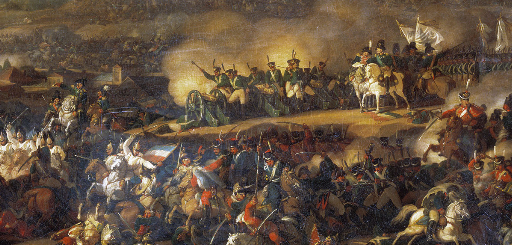
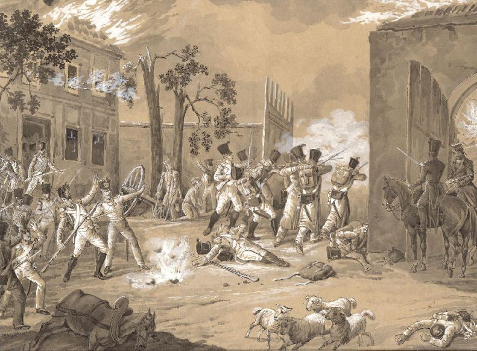

라이프치히 전투 (13) - 알렉산드르, 위기일발
게시: 2025-08-18T06:30:26+09:00
오후 2시경, 남부 전선에서 보헤미아 방면군 우익의 5갈래 공격은 모두 무너져 후퇴하고 있었습니다. 그 상황에서, 나폴레옹은 지금이 기다리던 바로 그 결정적 순간이라고 판단했습니다. 즉, 아껴두었던 예비대를 모조리 털어 넣고 승부를 낼 순간이었습니다. 그러나 나폴레옹 수중에는 남은 병력이 거의 없었습니다. 진작에 도착했어야 할 마르몽의 제6군단과 수암의 제3군단이 라이프치히 북쪽에서 아직도 도착하지 않았던 것입니다. 하지만 나폴레옹은 그때까지만 해도 마르몽과 수암이 곧 병력을 이끌고 나타날 것이라는 희망을 버리지 않고 있었습니다. 오전에 날아온 네의 편지에 따르면 유사시 프랑스와의 유일한 연결로가 될 린더나우 방면에 나타난 적군을 상대하기 위해 베르트랑의 제4군단은 그쪽 방면에 투입되어야 했지만, 린덴탈 방면에 나타난 적군이 나폴레옹의 판단처럼 대단한 규모가 아니라면, 그리고 곧 수암이 나타난다면, 마르몽과 수암의 군단들을 곧 리버트볼크비츠로 보낼 거라고 했기 때문이었습니다. 이미 근위대의 상당수를 여기저기 전선에 투입하긴 했지만, 사실 나폴레옹에게 예비대가 전혀 없는 것도 아니었습니다. 평소 어지간해서는 전투에 투입하지 않으며 아끼고 아꼈던 프랑스군 정예 중의 정예, 고참근위대(Vieille Garde, Old Guard)가 거의 그대로 남아 있었던 것입니다. 나폴레옹은 특히 이 고참근위대를 투입하는 것을 예전부터 극히 꺼렸습니다. 어지간한 상황이 아니라면 최후의 카드에 해당하는 고참근위대를 투입할 일이 없어야 했고, 또 이들을 투입하고도 이기지 못한다면 그건 다른 군단병들의 심리는 물론이고, 바로 나폴레옹 자기 자신의 심리 상태에도 심각한 타격이 되기 때문이었습니다. 그런 점 때문에 나폴레옹은 1812년 보로디노 전투에서도 끝까지 고참근위대를 투입하지 않았고, 결국 쿠투조프의 러시아군 주력부대를 섬멸하는데 실패하고 말았던 것입니다.

(고참근위대(Vieille Garde)는 직역하면 늙은 근위대입니다. 그림에 묘사된 이들의 얼굴을 보면 확실히 나이가 들어 보이긴 하는데, 이들은 정말 늙은 군인들이었을까요? 고참근위대에 선발되기 위해서는 10년 이상의 경력을 쌓아야 한다고 하지만, 말단 병사들을 뽑을 때는 전투 경력보다는 젊음의 스태미너가 더 필요한 것 아닐까요? 실제로는 고참근위대에는 35세 이상의 병사는 없었습니다. 어차피 나폴레옹의 근위대는 통령근위대 시절부터 계산해도 존속 기간이 15년 정도 밖에 안 되지만, 아무튼 35세를 넘은 병사는 파리의 수비대로 보내져 사실상 전투 임무에서는 빠졌기 때문입니다.) 그런데 나폴레옹은 이번에는 과감히 고참근위대도 투입하여 보헤미이 방면군의 중앙부, 즉 귈덴고사 방면으로 과감하게 밀어붙이기로 합니다. 이건 곧 마르몽과 수암의 군단들이 북쪽에서 내려올 것이라는 확신이 있었기에 가능한 것이었습니다. 나폴레옹은 먼저 근위포병대(l’Artillerie de la Garde)를 지휘하는 드루오(Antoine Drouot)에게 적진을 '부드럽게' 만들도록 지시했습니다. 드루오는 즉각 바하우와 리버트볼크비츠 사이의 언덕, 즉 나폴레옹의 사령부가 있던 갈건베르크에 84문의 대규모 포진을 방열하고 적진을 두들겼습니다. 갈건베르크는 불과 해발 166m 정도의 낮은 언덕에 불과했지만, 평원에서 166m가 차지하는 무게감은 대단한 것이었습니다. 특히 숨을 곳이 전혀 없는 탁 트인 벌판에 밀집대형으로 늘어선 병사들에게, 그 높이에 배치된 포병대는 그야말로 무시무시한 것이었습니다. 당시 프랑스군 전체에서 최고의 포병 전문가라고 손꼽히던 드루오가 직접 지휘하는 근위포병대는 20~30문의 러시아 포병대를 먼저 제압한 후, 이어서 적 보병을 강타하기 시작했습니다. 특히 바하우로 쳐들어왔던 뷔르템베르크의 오이겐 대공이 이끄는 러시아군 제2군단이 극심한 피해를 입었고, 오이겐 대공 자신도 타고 있던 말이 포탄에 맞아 쓰러지는 봉변을 당했습니다.

(지구 곡면에 따라, 해발 어느 정도의 높이에서 보이는 지평선까지의 거리가 어느 정도인지 계산하는 공식입니다.)

(윗 공식에 따라 계산한 결과입니다. 10m 높이에서 보는 것과, 166m 높이인 갈건베르크에서 보는 것의 범위가 천지차이임을 아실 수 있습니다.) 이어서 나폴레옹은 바하우와 리버트볼크비츠를 지키던 빅토르의 제2군단과 로리스통의 제5군단은 물론, 신참근위대 제1,2군단에 이어 고참근위대 제1사단까지 투입하며 귈덴고사 방면으로 진격시켰습니다. 단, 이 고참근위대 제1사단은 여전히 다른 군단들의 뒤를 받치도록 지시받았고, 여전히 최전방에 서지는 않았습니다. 보헤미아 방면군도 순순히 밀릴 기세가 아니었습니다. 러시아군은 진격해오는 이들을 위해 94문으로 이루어진 대규모 포병대를 준비해놓고 있었습니다. 밀집대형으로 진격하던 그랑다르메의 병사들은 끊임없이 날아오는 포탄에 큰 피해를 입었으나, 당시 부대를 그런 밀집대형으로 진격시키는 이유가 그런 상황에서도 병사들에게 진격을 강요하기 위함이었습니다. 병사들은 눈에 보이지 않는 거대한 주먹 같은 포탄에 앞뒤로 늘어선 2~3명이 한꺼번에 피떡이 되어 나가떨어지는 상황 속에서도 옆에 선 동료들과 함께 걷는다는 사실을 위안삼으며 계속 진격했습니다. 이렇게 러시아군 포병대에 의해 큰 피해가 발생할 때 즈음 뮈라가 직접 지휘하는 대규모 기병대가 돌격을 개시했습니다. 그때까지의 유럽 역사상 최대 규모였다는 약 1만에 달하는 이 기병 돌격에는 총 4개 기병사단이 동원되었고, 그 선두에는 보르드줄(Bordesoulle) 장군의 제1중기병사단이 있었는데, 이들은 후퇴하던 오이겐 대공의 러시아군 제2군단을 글자 그대로 녹여버렸습니다. 나중에 오이겐 대공이 그 날의 사상자 규모를 서면으로 보고할 때, 바클레이는 그 피해가 너무 엄청나서 믿지 않을 정도였다고 합니다.

(기본적인 프랑스군 기병대 단위인 squadron, 즉 기병 중대의 편재를 묘사한 그림입니다. 1개 sqaudron은 대략 약 80명 정도입니다. 전투에서 돌격할 때도 보통 이렇게 횡대를 이루었습니다.) 이들은 그렇게 후퇴하는 연합군을 밀어버린 뒤, 일부는 아군을 박살내고 있던 러시아 포병진지로 뛰어들어 러시아 포병들을 쫓아내거나 베어 버리고 그 대포의 점화구에 구리못을 박기 시작했습니다.

(당시 적의 대포를 잠깐 탈취했을 때 그걸 파괴하는 가장 좋은 방법은 무른 구리못을 점화구에 끼우고 망치질로 봉하는 것이었습니다. 이러면 그 대포는 적어도 몇 시간 동안, 솜씨 좋은 대장장이가 그 못을 제거할 때까지 사용이 불가능했습니다. 그래서 당시 기병들의 필수 휴대 장비 중에는 작은 망치와 구리못이 꼭 들어 있었습니다.) 그리고 프랑스 흉갑기병을 포함한 일부 기병대는 알렉산드르와 프리드리히 빌헬름이 전황을 살피고 있던 귈덴고사 바로 옆 언덕 발치까지 도달했습니다. 슈바르첸베르크는 짜르와 프로이센 국왕이 적군에게 사로잡힐까 우려하여 이 군주들에게 퇴각을 권유했으나, 프리드리히 빌헬름이 뭐라고 하기도 전에 짜르가 딱 잘라 거절했습니다. 믿는 구석이 있었기 때문이었습니다. 당시 기병들의 전투는 바람처럼 달리는 기병들끼리 서로 정면으로 충돌하며 중세 기사들처럼 싸울 것 같지만, 실은 밀물과 썰물처럼 싸웠습니다. 싸움이 전개되다가 상대편 보병들이 흔들리는 모습을 보이면, 그 틈을 노린 기병들이 돌격하여 후퇴하는 적 보병들을 유린하면서 기병전이 시작되는 것이 보통이었습니다. 그러나 보통 그렇게 1~2km 정도를 전속력으로 달린 말들은 곧 지쳐서 기동성이 떨어질 수 밖에 없었습니다. 그 순간을 기다린 상대편 기병대가 반격을 해오면, 그곳까지 돌격하느라 이미 지친 기병들은 맥없이 돌아서서 후퇴하곤 했던 것입니다.

(바하우에서 귈덴고사까지는 직선거리로 약 3km 정도 되네요.) 귈덴고사 앞까지 도달했던 뮈라의 기병대들도 똑같은 패턴을 따랐습니다. 특히나 귈덴고사 언덕의 앞쪽은 질퍽한 습지 투성이었고, 그랑다르메의 기병들은 거기서 딱 진격이 주춤거렸습니다. 알렉산드르를 호위하기 위해 언덕 뒤편에서 대기하던 러시아 기병대가 그틈을 노리고 우르르 몰려나오자, 이미 지쳐버린 그랑다르메 기병대는 허겁지겁 퇴각해야 했습니다. 그러는 와중에도 그랑다르메 기병들은 제몫을 다하여, 잠깐 점거했던 러시아 포병 진지에서 26문의 대포의 점화구를 구리못으로 막아버렸습니다. 러시아 기병들의 추격도 드루오의 근위포병대의 반격을 받고는 물러나야 했던 것은 마찬가지였습니다.

(흔히 라이프치히 전투를 묘사한 가장 대표적인 그림으로 뽑히는 러시아 화가 Vladimir Moshkov의 작품입니다. 아마도 귈덴고사 언덕 발치까지 진격해온 프랑스 기병들을 막아내는 러시아군 기병대의 모습을 묘사한 것으로 보입니다.)

(윗 그림의 우측 중앙부를 확대한 것입니다. 짜르 알렉산드르의 얼굴을 알아보실 수 있을 것입니다. 그 옆에 약간 겁먹은 듯한 모습으로 묘사된 것은 아마도 프로이센 국왕 프리드리히 빌헬름일 것입니다. 짜르가 탄 말의 발치에 프랑스 삼색기가 내동댕이쳐진 것이 보이고, 짜르의 뒤에는 러시아의 쌍독수리 깃발을 든 근위대가 버티고 선 모습이 보입니다.) 이렇게 역사상 최대라는 뮈라의 기병 돌격이 결정적 전과를 올리지 못하고 끝나는 동안, 그들이 열어준 공간을 통해서 그랑다르메 보병들의 반격은 계속 되고 있었습니다. 마침내 2시 30분경, 빅토르의 제2군단과 신참근위대 제1군단은 귈덴고사 바로 서쪽 마을인 아우엔하인(Auenhain)을 점령했습니다. 하지만 제5군단은 귈덴고사 앞에서 더 전진하지 못하고 주춤거렸습니다. 귈덴고사 마을에서는 후퇴해온 러시아군과 프로이센군이 건물과 숲 등을 엄폐물로 삼아 맹렬히 저항하고 있었기 때문이었습니다.

(1813년 10월16일, 아우엔하인의 양목장에서 벌어진 전투를 그린 Ernst Wilhelm Straßberger의 그림으로서, 라이프치히 박물관에 소장된 작품입니다. 아우엔하인은 사실 마을이라기보다는 양목장이 있던 장소였고, 19세기에도 이곳의 인구는 양목장에서 일하는 20~30명에 불과했다고 합니다. 아우엔하인(Auenhain)이라는 이름에서 auen은 독일 고어에서 '물가, 습지'를 뜻하는 단어이고, hain은 작은 숲을 뜻한다고 합니다.) 하지만 연합군의 패잔병들이 언제까지고 그렇게 버틸 수는 없었습니다. 여기서 조금 더 밀어붙이면, 나폴레옹은 다시 한번 쾌승을 거두고 제6차 대불동맹전쟁을 끝내버릴 수 있을 것 같았습니다. 그러나 알렉산드르가 후퇴를 거부한 것에는 다 이유가 있었습니다. Source : The Life of Napoleon Bonaparte, by William Milligan Sloane Napoleon and the Struggle for Germany, by Leggiere, Michael V With Napoleon's Guns by Colonel Jean-Nicolas-Auguste Noël https://www.britannica.com/event/Napoleonic-Wars/Dispositions-for-the-autumn-campaign https://www.historyofwar.org/articles/battles_leipzig_16_october.html https://warhistory.org/@msw/article/leipzig-battle-of-the-nations https://en.wikipedia.org/wiki/Battle_of_Leipzig https://www.napolun.com/mirror/napoleonistyka.atspace.com/Leipzig_battle.htm https://www.amazon.fr/Zvezda-Maquette-Vieille-Imp%C3%A9riale-1805-15/dp/B000C0VBII https://de.wikipedia.org/wiki/Auenhain